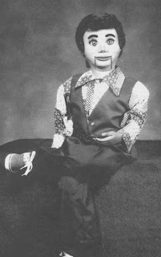
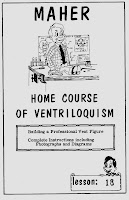

Lesson 18 (Maher 1975 Course)
2/4/2010
{kind=link}

It did not take long, after purchasing Maher School of Ventriloquism in 1969, for us to discover people frequently purchased the Maher Course because it included plans for building a vent figure. But as a craftsman, and as a past student of the Course myself, I knew the mimeographed set of plans Mrs. Maher provided were less than adequate. So early on, one of my personal goals was to replace that lesson. I was able to do so in 1975.
That was the year a new Lesson 18 was published with a full set of plans that included photos and illustrations showing how one could build a full size figure employing ordinary skills and products, using common household tools. Those were the days before digital cameras, so as I built the figure I made repeated trips into Denver to our photographer so he could photo the work as it progressed. The picture here is the completed figure I built. Others following the instructions would create a similar character or something totally different. I would love to hear from any and all of you who built figure or figures using my Lesson 18 as reference.
Since we have continued to receive requests for this set of instructions, it is the one Lesson from the 1975 traditional version of the Maher Course that we've kept in print.
{kind=link}

Give-Away: By drawing, Dean Guymon is today's winner of a signed Lesson 18 (18 pages).
To all: If you have not not signed up to be eligible for all gift/prize drawings, you can do so now by sending your name to mahertalk@aol.com . There is no cost; no obligation. Join the fun!
To Purchase: I sell Lesson 18 (signed) for $6.00 Postpaid. Contact me by email to order. I can either send you a PayPal money request, or you can mail me your check or money order.